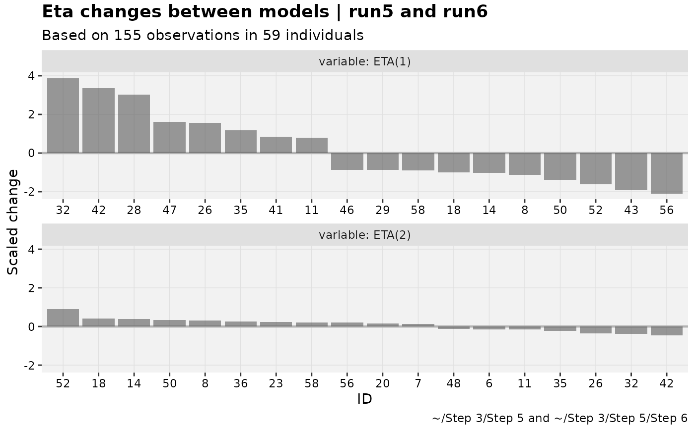

Specific waterfall plots
waterfalls.RdDifferences are second listed model minus first listed. Eg, in
eta_waterfall(run1,run2), the when etas in run2 are greater than
those in run1, the difference will be positive.
Usage
prm_waterfall(
xpdb_s,
...,
.inorder = FALSE,
type = "bh",
max_nind = 0.7,
scale_diff = TRUE,
show_n = TRUE,
title = "Parameter changes between models | @run",
subtitle = "Based on @nobs observations in @nind individuals",
caption = "@dir",
tag = NULL,
facets = NULL,
facet_scales = "free_x",
.problem,
.subprob,
.method,
quiet
)
eta_waterfall(
xpdb_s,
...,
.inorder = FALSE,
type = "bh",
max_nind = 0.7,
scale_diff = TRUE,
show_n = TRUE,
title = "Eta changes between models | @run",
subtitle = "Based on @nobs observations in @nind individuals",
caption = "@dir",
tag = NULL,
facets = NULL,
facet_scales = "free_x",
.problem,
.subprob,
.method,
quiet
)
iofv_waterfall(
xpdb_s,
...,
.inorder = FALSE,
type = "bh",
max_nind = 0.7,
scale_diff = FALSE,
show_n = TRUE,
title = "iOFV changes between models | @run",
subtitle = "Based on @nobs observations in @nind individuals",
caption = "@dir",
tag = NULL,
facets = NULL,
facet_scales = "free_x",
.problem,
.subprob,
.method,
quiet
)Arguments
- xpdb_s
<
xpose_set> object- ...
See <
two_set_dots>- .inorder
See <
two_set_dots>- type
See Details.
- max_nind
If less than 1, the percentile of absolute change values above which to plot. If above 1, the absolute number of subjects is included. To show all, use an extreme positive number like 9999.
- scale_diff
<
logical> Scale change to the standard deviation of the model 1 column values. Respects faceting.- show_n
<
logical> For faceting variables, show N per facet. Not implemented- title
Plot title
- subtitle
Plot subtitle
- caption
Plot caption
- tag
Plot tag
- facets
<
character> Faceting variables- facet_scales
<
character> Forwarded tofacet_*(scales = facet_scales)- .problem
The problem to be used, by default returns the last one.
- .subprob
The subproblem to be used, by default returns the last one.
- .method
The estimation method to be used, by default returns the last one.
- quiet
Silence extra debugging output
Details
For type-based customization of plots:
bbar plot (fromgeom_bar)hhline at 0 (fromgeom_hline)ttext of change value (fromgeom_text)
Examples
# Parameter value changes
pheno_set %>%
# Ensure param is set
focus_qapply(set_var_types, param=c(CL,V)) %>%
prm_waterfall(run5,run6)
#> Using data from $prob no.1
#> Removing duplicated rows based on: ID
#> Tidying data by ID, TIME, AMT, WT, APGR ... and 16 more variables
# EBE value changes
pheno_set %>%
eta_waterfall(run5,run6)
#> Using data from $prob no.1
#> Removing duplicated rows based on: ID
#> Tidying data by ID, TIME, AMT, WT, APGR ... and 16 more variables

# iOFV changes
pheno_set %>%
focus_qapply(backfill_iofv) %>%
# Note the default scaling is flipped here
iofv_waterfall(run5,run6)
#> Using data from $prob no.1
#> Removing duplicated rows based on: ID
#> Tidying data by ID, TIME, AMT, WT, APGR ... and 17 more variables